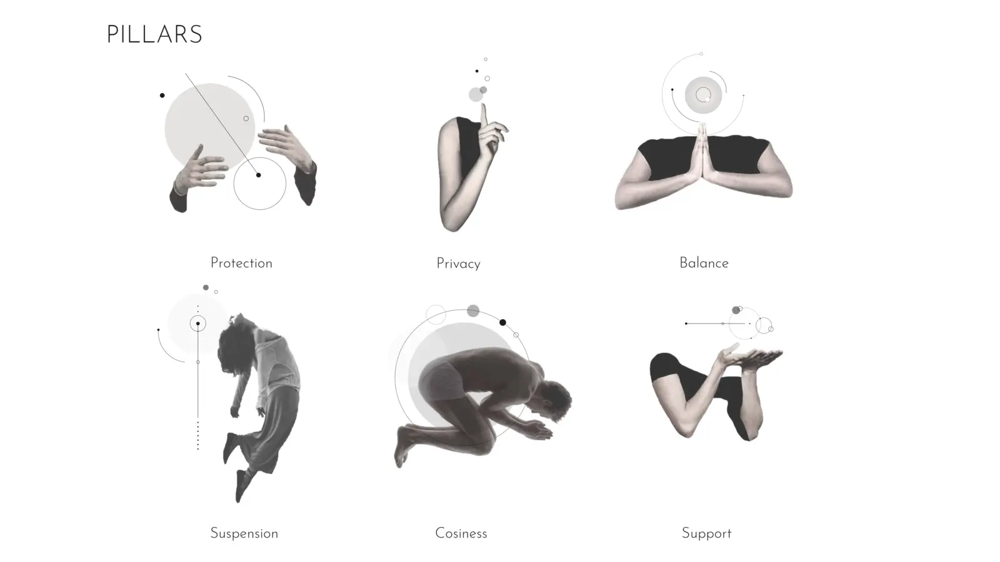
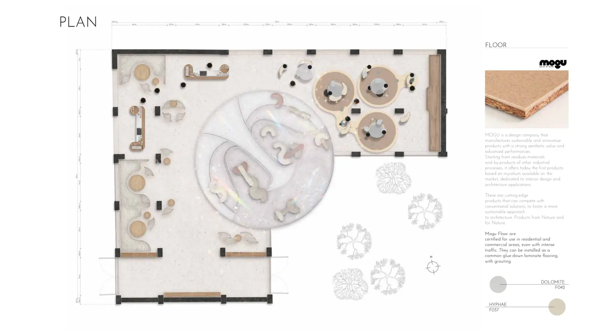
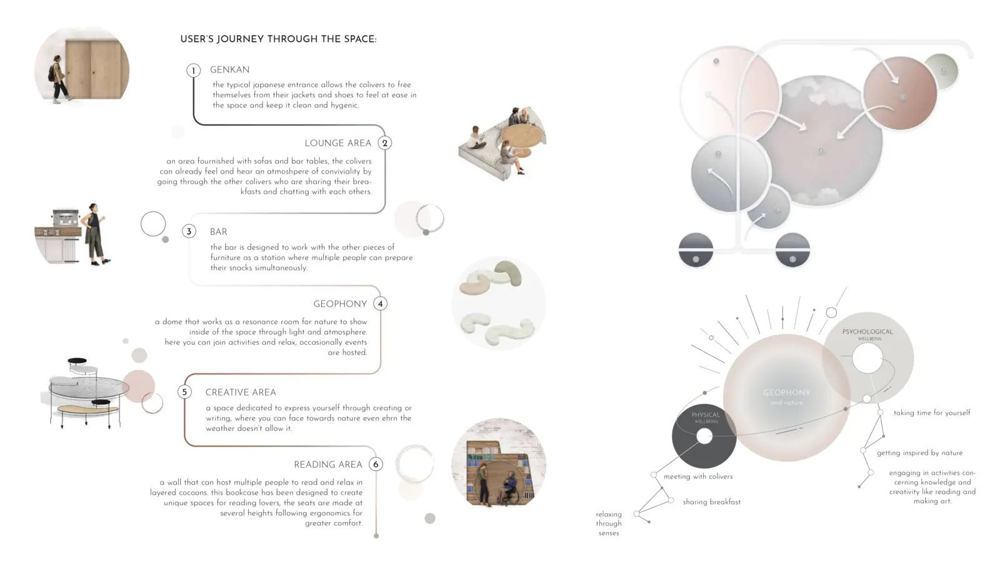
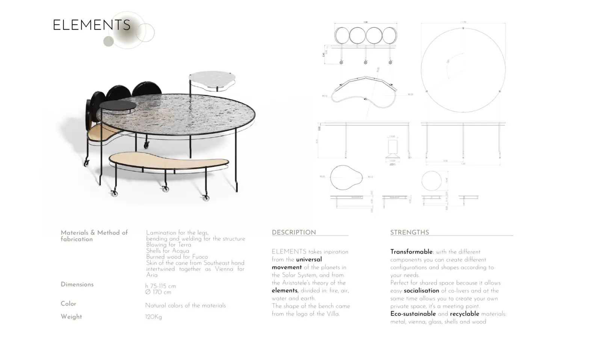
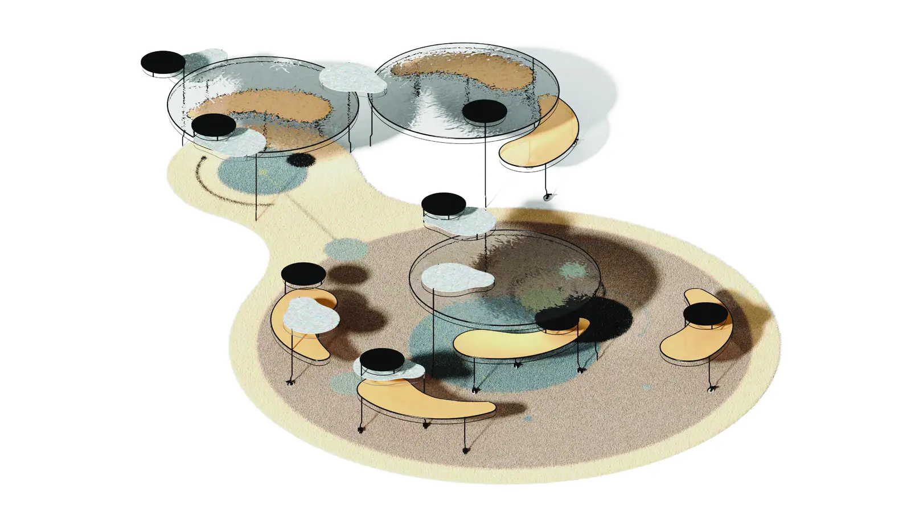
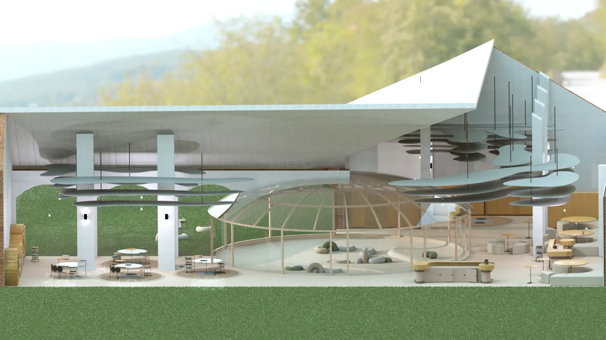
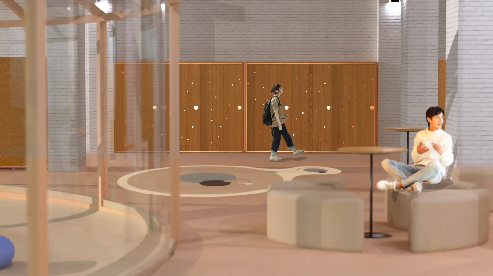
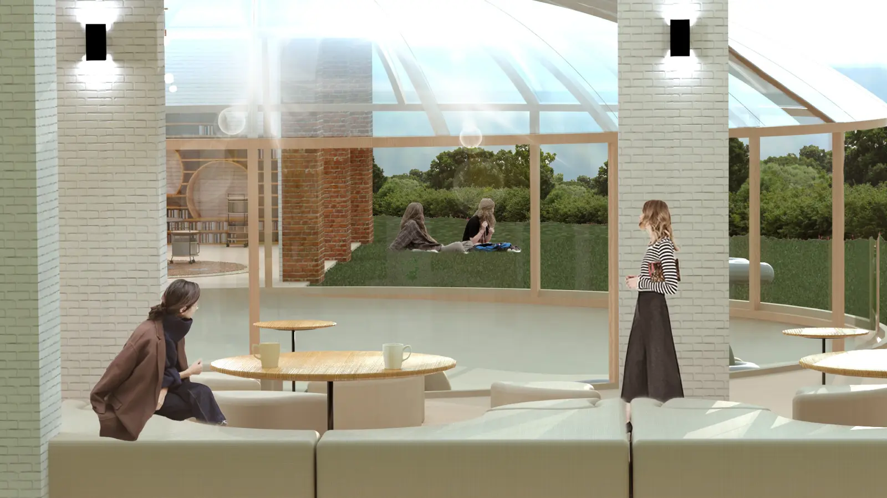
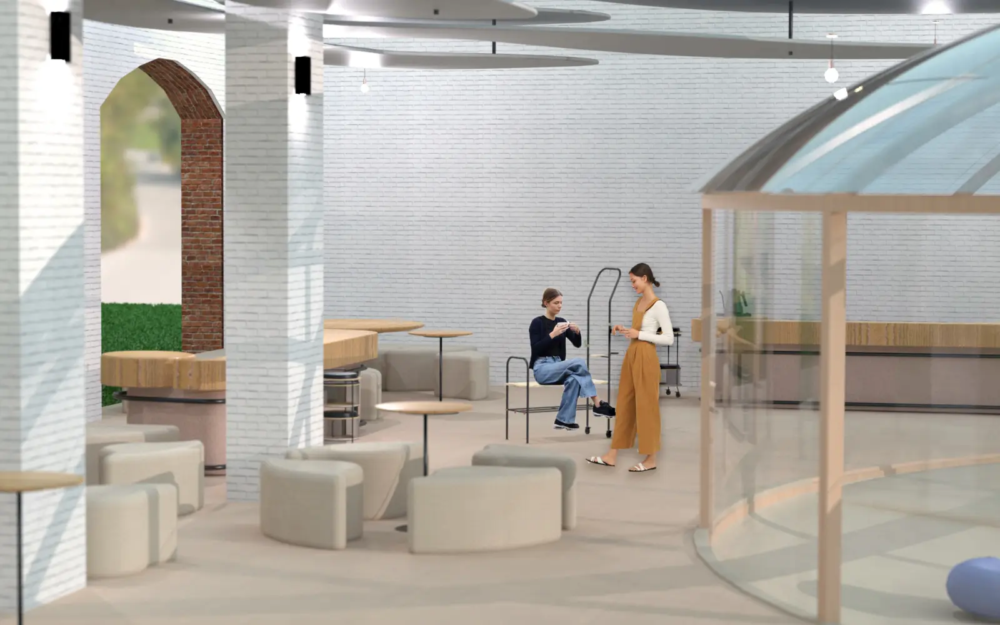

The project began by exploring human needs, wellbeing and the role of shared environments in everyday life. Research focused on understanding how spatial design could encourage self-care, creativity and stronger community relationships.
Based on the research, we developed the concept Geophony — an immersive environment where nature, architecture and community coexist in harmony. The experience encourages residents to slow down, reconnect with themselves and share meaningful moments with others.
Working in an international multidisciplinary team, we designed the shared spaces and custom furniture to support different moments of the residents' daily lives — from socialising and creative work to relaxation and quiet reflection.
The spatial experience was designed as a sequence of moments that gradually transition residents from the outside world into a calm, collaborative environment inspired by nature.
Geophony proposes a new vision of co-living where interior design goes beyond functionality, becoming a tool to support wellbeing, creativity and community. By integrating architecture, furniture and experience design, the project transforms Villa Arconati into a place where people can reconnect with nature, themselves and each other.








